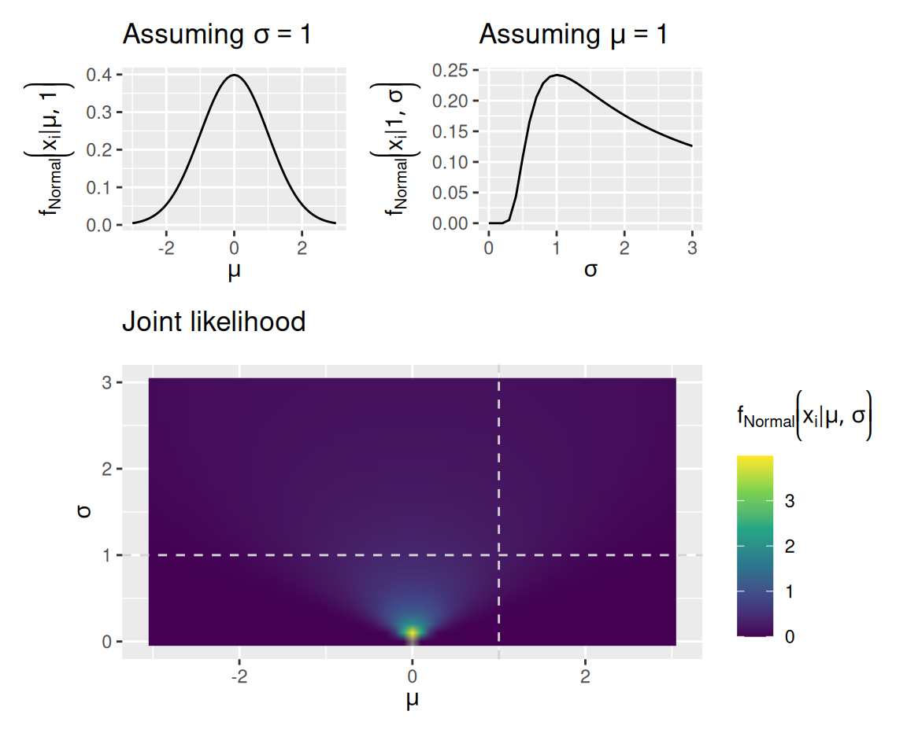
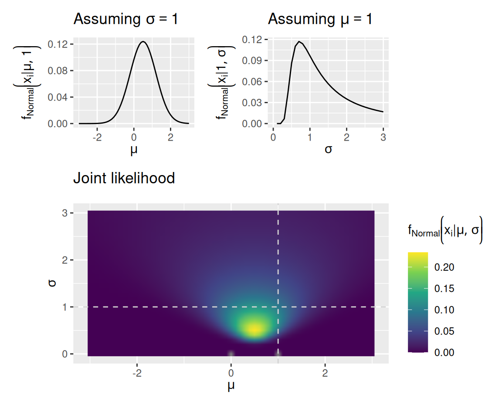
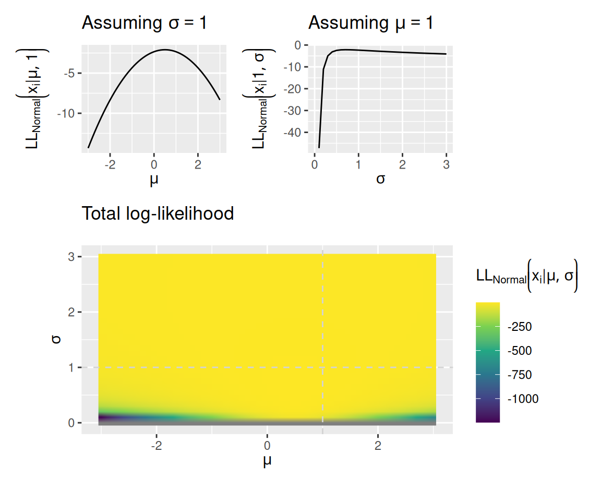
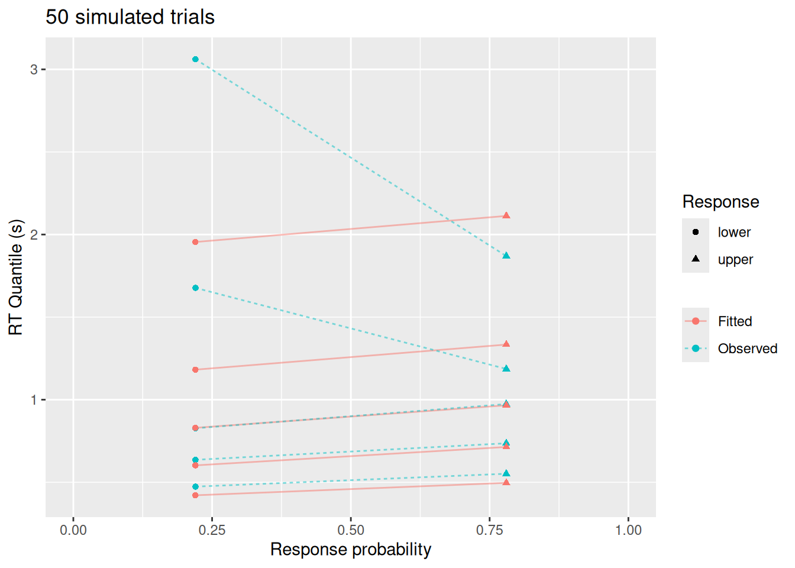
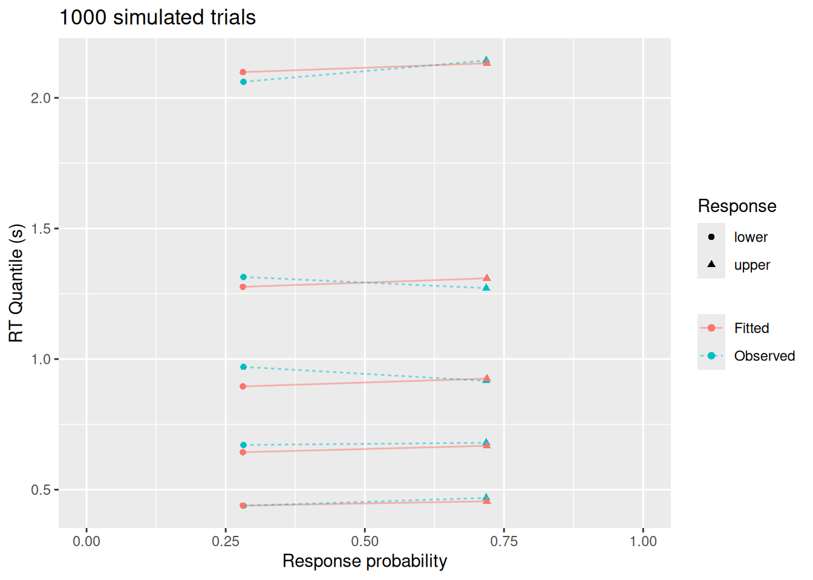
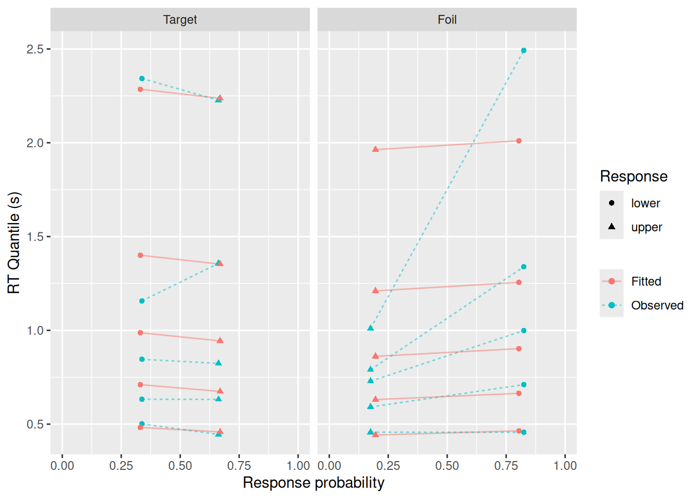

5 Fitting a diffusion model to data
In the previous chapter, we adapted our random walk model into a diffusion model. We saw how the different parameters of the diffusion model produce different patterns of choice and RT behavior. This is what makes the diffusion model a useful cognitive model in so many cases: It has parameters that correspond to meaningful, if unobservable, psychological constructs (evidence accumulation, response caution, response bias) and we can see how differences in those constructs manifest in observable behavior.
In this chapter, we turn the model around: Instead of taking parameters and using them to produce behavior, we are taking behavior and inferring what values of the model parameters most likely produced that behavior. In doing so, we are performing a kind of “mind reading”—we are learning about unobservable psychological constructs via how those constructs manifest in behavior.
The foundational material puts us in a position to do three things in the next chapter:
- Compare estimated model parameters between conditions to identify what cognitive constructs are affected by different research conditions.
- Compare estimated model parameters between individuals to characterize how different people perfom the same task.
- Compare versions of the model that place constraints on parameter values to see which components of the model are and are not important for explaining the data.
5.1 Fitting a model
Fitting a model to data means finding the values of that model’s parameters that assign the highest likelihood to the observed data. Given a set of parameter values, we can use the model to compute how likely it would be to have seen each observation in our dataset.
5.1.1 Parameters, likelihoods, and log-likelihoods
Using \(\theta\) to stand for a set of parameter values and \(x_i\) to stand for a particular observation, we can use \(f \left( x \mid \theta \right)\) to stand for the likelihood of the datum \(x_i\) given the parameter values \(\theta\) and a model with a likelihood function \(f\).
Consider the familiar normal distribution. This distribution has two parameters, a mean \(\mu\) and a standard deviation \(\sigma\). So for the normal distribution, \(\theta\) is actually a vector with two elements: \(\theta = \left[ \mu, \sigma \right]\). The normal distribution is a simple model in that it says that observed values fall in a particular shape around the mean \(\mu\) with a spread described by \(\sigma\). The likelihood function for the normal distribution, written below, indicates how likely it would be to observe datum \(x_i\) given specific values of \(\mu\) and \(\sigma\): \[ f_{\text{Normal}} \left( x_i \mid \mu, \sigma \right) = \frac{1}{ \sigma \sqrt{2 \pi}} \exp \left[ - \frac{\left(x_i - \mu \right)^2}{2 \sigma^2} \right] \]
The graph below assumes that we have just a single observation, \(x_i = 0\). The plots show how the likelihood assigned to that datum depends on both parameters of the normal distribution, \(\mu\) and \(\sigma\).
Code
norm_like_df <- expand_grid(mu = seq(-3, 3, by = 0.1), sigma = seq(0, 3, by = 0.1), x = 0) %>%
mutate(d = dnorm(x, mean = mu, sd = sigma))
mu_plot <- norm_like_df %>%
filter(sigma == 1) %>%
ggplot(aes(x = mu, y = d)) +
geom_line() +
labs(x = expression(mu), y = expression(f[Normal] * bgroup("(", x[i] * "|" * list(mu, 1), ")")), title = expression("Assuming " * sigma == 1))
sigma_plot <- norm_like_df %>%
filter(mu == 1) %>%
ggplot(aes(x = sigma, y = d)) +
geom_line() +
labs(x = expression(sigma), y = expression(f[Normal] * bgroup("(", x[i] * "|" * list(1, sigma), ")")), title = expression("Assuming " * mu == 1))
joint_plot <- norm_like_df %>%
ggplot(aes(x = mu, y = sigma, fill = d)) +
geom_raster(interpolate = TRUE) +
geom_vline(xintercept = 1, linetype = "dashed", color = "lightgrey") +
geom_hline(yintercept = 1, linetype = "dashed", color = "lightgrey") +
scale_fill_viridis_c() +
coord_equal() +
labs(x = expression(mu), y = expression(sigma), fill = expression(f[Normal] * bgroup("(", x[i] * "|" * list(mu, sigma), ")")), title = "Joint likelihood")
mu_plot + sigma_plot + joint_plot + plot_layout(design = "12\n33", guides = "keep", heights = c(1, 2))
When we have more than one observation, the likelihood of all observations is the product of the likelihoods of each individual observation: \[ f \left( \mathbf{x} \mid \theta \right) = \prod_{i = 1}^N f \left( x_i \mid \theta \right) \] This situation is illustrated in the graphs below. These graphs again assume a normal distribution as the model, but now we have observed the values \(\mathbf{x} = \left[ 0, 1 \right]\).
Code
norm_like_df <- expand_grid(mu = seq(-3, 3, by = 0.1), sigma = seq(0, 3, by = 0.1), x = c(0, 1)) %>%
mutate(d = dnorm(x, mean = mu, sd = sigma)) %>%
group_by(mu, sigma) %>%
summarize(d = prod(d), .groups = "keep")
mu_plot <- norm_like_df %>%
filter(sigma == 1) %>%
ggplot(aes(x = mu, y = d)) +
geom_line() +
labs(x = expression(mu), y = expression(f[Normal] * bgroup("(", x[i] * "|" * list(mu, 1), ")")), title = expression("Assuming " * sigma == 1))
sigma_plot <- norm_like_df %>%
filter(mu == 1) %>%
ggplot(aes(x = sigma, y = d)) +
geom_line() +
labs(x = expression(sigma), y = expression(f[Normal] * bgroup("(", x[i] * "|" * list(1, sigma), ")")), title = expression("Assuming " * mu == 1))
joint_plot <- norm_like_df %>%
ggplot(aes(x = mu, y = sigma, fill = d)) +
geom_raster(interpolate = TRUE) +
geom_vline(xintercept = 1, linetype = "dashed", color = "lightgrey") +
geom_hline(yintercept = 1, linetype = "dashed", color = "lightgrey") +
scale_fill_viridis_c() +
coord_equal() +
labs(x = expression(mu), y = expression(sigma), fill = expression(f[Normal] * bgroup("(", x[i] * "|" * list(mu, sigma), ")")), title = "Joint likelihood")
mu_plot + sigma_plot + joint_plot + plot_layout(design = "12\n33", guides = "keep", heights = c(1, 2))Warning: Removed 1 row containing missing values or values outside the scale range
(`geom_line()`).
5.1.2 Log-likelihood
You may have noticed that the scale on the bottom graph in the second set of plots (where the data were \(0, 1\)) has a smaller maximum than it did in the bottom graph in the first set of plots (where the data were just \(0\)). This is because the likelihood of the whole dataset is a product of many small numbers, so the result also tends to be small. Unfortunately, this can lead to technical issues when we have many observations because the resulting likelihood may be too small for the computer to accurately calculate.
As a result, we often work with the natural logarithm of the likelihood function. Because multiplication turns into addition on the log-scale, this saves the computer from needing to work with very tiny numbers. We often write \(LL\) to stand for this “log-likelihood”: \[ LL \left( \mathbf{x} \mid \theta \right) = \log \left[ \prod_{i = 1}^N f \left( x_i \mid \theta \right) \right] = \sum_{i = 1}^N \log f \left( x_i \mid \theta \right) \]
Fortunately, since the logarithm is a monotonic transformation, the parameters that maximize the likelihood are the very same parameters that maximize the log-likelihood. To get a sense of this, the graphs below replicate the graph above with observed values \(\mathbf{x} = \left[ 0, 1 \right]\), but showing the log-likelihood instead of the likelihood.
Code
norm_like_df <- expand_grid(mu = seq(-3, 3, by = 0.1), sigma = seq(0, 3, by = 0.1), x = c(0, 1)) %>%
mutate(ll = dnorm(x, mean = mu, sd = sigma, log = TRUE)) %>%
group_by(mu, sigma) %>%
summarize(ll = sum(ll), .groups = "keep")
mu_plot <- norm_like_df %>%
filter(sigma == 1) %>%
ggplot(aes(x = mu, y = ll)) +
geom_line() +
labs(x = expression(mu), y = expression(LL[Normal] * bgroup("(", x[i] * "|" * list(mu, 1), ")")), title = expression("Assuming " * sigma == 1))
sigma_plot <- norm_like_df %>%
filter(mu == 1) %>%
ggplot(aes(x = sigma, y = ll)) +
geom_line() +
labs(x = expression(sigma), y = expression(LL[Normal] * bgroup("(", x[i] * "|" * list(1, sigma), ")")), title = expression("Assuming " * mu == 1))
joint_plot <- norm_like_df %>%
ggplot(aes(x = mu, y = sigma, fill = ll)) +
geom_raster(interpolate = TRUE) +
geom_vline(xintercept = 1, linetype = "dashed", color = "lightgrey") +
geom_hline(yintercept = 1, linetype = "dashed", color = "lightgrey") +
scale_fill_viridis_c() +
coord_equal() +
labs(x = expression(mu), y = expression(sigma), fill = expression(LL[Normal] * bgroup("(", x[i] * "|" * list(mu, sigma), ")")), title = "Total log-likelihood")
mu_plot + sigma_plot + joint_plot + plot_layout(design = "12\n33", guides = "keep", heights = c(1, 2))Warning: Removed 1 row containing missing values or values outside the scale range
(`geom_line()`).
5.1.3 Maximizing log-likelihood
The combination of parameter values that assigns the highest total log-likelihood to all the data is where the bright spot is in the bottom graph of each set of plots above. For a normal model, the values of \(\mu\) and \(\sigma\) that assign the highest total log-likelihood to the data can be computed directly: they are the sample mean and the population standard deviation computed on the same (i.e., where you divide by \(N\) instead of \(N - 1\)).
For a more complex model, like our diffusion model, we will not be able to calculate these “optimal” parameter values directly. Instead, we will need to use the computer to search for these values. The topic of parameter optimization is a large one that we cannot fully address here. However, the functions supplied with this tutorial make use of two search methods: the Nelder-Mead simplex algorithm and the ucminf function from the ucminf R package.
The essence of these parameter optimization algorithms is this: They begin with an initial “guess” of the parameter values and compute the log-likelihood of the data given that initial guess. They then “explore” by calculating the log-likelihood of the data using slightly adjusted parameter values. If this exploration finds a set of adjusted parameter values that assign a higher log-likelihood to the data than the original guess, then these adjusted values are considered a “better guess”. The search process then begins again starting from that better guess. As a result, the “guess” gets gradually better on each step of the algorithm until it can no longer find any way to adjust the parameters to find a higher log-likelihood.
One can think of this parameter search as like trying to find a mountain peak in a snowstorm: The snowstorm obscures your visibility so you can only search areas in your immediate vicinity (similar to how the parameter optimizer tries to adjust values of the parameters starting from an initial guess). However, you can still figure out which direction is “uphill” from your current position (similar to how the algorithm finds adjusted parameters that yield a higher log-likelihood than the current best guess). Eventually, you will reach a point where you can’t go uphill any more.
The metaphor in the previous paragraph serves to highlight the fact that parameter optimizers are not necessarily guaranteed to find the “global optimum”—the best possible set of parameter values. It is possible that they instead find a “local optimum”—a set of values for which no small adjustment yields an improvement, but which is not the best you could possibly do. To return to the metaphor, the tallest peak may be a mile away from the one you found, but you’ll never know that because you can’t see it.
The utility functions we will use in this tutorial are generally pretty good at finding global optima, but it is not guaranteed! This is why it is important to develop some intuitions about how model parameters manifest in behavior, so you can detect when you might have reached a local optimum instead of a global one.
5.1.4 Minimizing negative log-likelihood
Due to the vagaries of history, algorithms that search for optimal parameter values are often written not to maximize something, but to minimize it instead. As a result, what a parameter optimization algorithm actually does is minimize the negative log-likelihood. Basically, it flips the “maximization” problem over, although it does not change anything conceptually. However, it does mean that a more appropriate metaphor is finding the lowest point in a valley rather than the highest peak of a mountain range.
5.2 Fitting a diffusion model
To find the set of parameters for a diffusion model that assign the highest likelihood to the data, we need to be able to compute the likelihood of making a specific choice at a specific time, given a set of diffusion model parameters. This computation is not something we can do by hand—we have to rely on the computer. Fortunately, many folks have contributed to the development of efficient means of doing this computation (e.g., Blurton et al., 2012; Gondan et al., 2014; Hartmann & Klauer, 2021; Navarro & Fuss, 2009; Tuerlincx, 2004).
We will make use specifically of an R package that implements these methods called WienR (Hartmann & Klauer, 2023). The name comes from the fact that Norbert Wiener was associated with the development of the “bare-bones” diffusion model without any of the trial-by-trial variability introduced by Ratcliff (1978). That said, the WienR package allows for all of those additional forms of variability as described in the previous chapter.
Be sure you have the WienR package installed and loaded!
Code
library(WienR)5.2.1 Diffusion model likelihood
The WienR package provides a function called WienerPDF which returns both the likelihood and the log-likelihood of a set of responses, given a set of diffusion model parameters.
Unlike with the normal distribution model, where an observation was characterized by a single number, an observation for a diffusion model is characterized by a choice and a response time. Thus, if we want to compute the likelihood of responding at the upper boundary in 1 second given a drift rate of \(v = 0.5\), response caution of \(a = 2\), response bias of \(w = 0.5\), and residual time \(t_0 = 0.2\), we use
Code
WienerPDF(t = 1, response = "upper", a = 2, v = 0.5, w = 0.5, t0 = 0.2)
First-passage time PDF
[1] 0.4362052
---------------------------
Log of first-passage time PDF
[1] -0.8296426
---------------------------The “First-passage time PDF” is the likelihood of having made that response at that time.
Let’s imagine that we observed a few more trials, one in which a decision-maker responded at the upper boundary in 1.5 seconds and one in which the decision-maker responded at the lower boundary in 2 seconds. We can compute the likelihood and log-likelihood of all of those trials:
Code
WienerPDF(t = c(1, 1.5, 2), response = c("upper", "upper", "lower"), a = 2, v = 0.5, w = 0.5, t0 = 0.2)
First-passage time PDF
[1] 0.43620517 0.22137809 0.04128626
---------------------------
Log of first-passage time PDF
[1] -0.8296426 -1.5078832 -3.1872255
---------------------------Note two things: First, t and response are allowed to be vectors, where the \(i\)th entry in the t vector corresponds to the \(i\)th entry in the response vector. Second, we get the likelihood and log-likelihood for each trial individually. So if we want the total log-likelihood, we have to do that ourselves:
Code
result <- WienerPDF(t = c(1, 1.5, 2), response = c("upper", "upper", "lower"), a = 2, v = 0.5, w = 0.5, t0 = 0.2)
(total_log_likelihood <- sum(result$logvalue))[1] -5.524751The upshot of this is that WienerPDF gives us a way to evaluate the log-likelihood of a set of choices and response times given a set of values for the diffusion model’s parameters. WienerPDF also allows us to include variability in drift rates via the sv parameter, variability in boundaries via the sw parameter, and variability in residual time via the st0 parameter, like so:
Code
WienerPDF(t = c(1, 1.5, 2), response = c("upper", "upper", "lower"), a = 2, v = 0.5, w = 0.5, t0 = 0.2, sv = 0.5, sw = 0.1, st0 = 0.4)
First-passage time PDF
[1] 0.56113640 0.26562047 0.06165999
---------------------------
Log of first-passage time PDF
[1] -0.5777913 -1.3256868 -2.7861200
---------------------------Notice that the likelihoods and log-likelihoods changed when we included those three new parameters (which, by default, are set to zero).
5.2.2 Finding the best-fitting parameters
To find the diffusion model parameters that assign the highest log-likelihood to a given set of choices and RT’s, I have provided a helpful function called fit_wienr. To use this function, download the wienr_fit_utils.r R script to your working directory and run
Code
source("wienr_fit_utils.r")We shall see later that the fit_wienr function has some useful bells-and-whistles, but for now let’s just see how it works in its basic form. To do this, let’s use another function from the WienR package called sampWiener which simulates a sample of data from a diffusion model, just like we did in the last chapter (actually, you could even use the diffusion_sim function you built for that purpose!):
Code
(sim_data <- sampWiener(N = 50, a = 2, v = 0.5, w = 0.5, t0 = 0.2))$q
[1] 1.0145267 0.7785001 0.4830922 0.7476763 0.6889558 0.3996333 0.7652827
[8] 1.0678441 1.0589824 1.1778599 1.1916915 2.0070563 0.4737943 0.5687575
[15] 0.9735880 0.7182124 0.7907633 1.5717658 0.6528604 0.8988441 0.6722051
[22] 0.3394198 0.8275921 2.0176933 0.6527308 1.3267482 1.0114098 0.7283250
[29] 1.6299191 1.8353343 1.2566600 1.2643379 2.0130723 1.5419533 1.0620593
[36] 0.5713716 2.5825087 0.7561459 1.1029754 0.6381128 0.5454809 0.6359990
[43] 3.0614166 1.6769220 0.8270179 2.9357647 1.0710890 0.3431315 0.4737332
[50] 3.6870701
$response
[1] "upper" "upper" "upper" "upper" "upper" "upper" "upper" "upper" "upper"
[10] "upper" "upper" "upper" "upper" "upper" "upper" "upper" "upper" "upper"
[19] "upper" "upper" "upper" "upper" "upper" "upper" "upper" "upper" "upper"
[28] "upper" "upper" "upper" "upper" "upper" "upper" "upper" "upper" "upper"
[37] "upper" "upper" "upper" "lower" "lower" "lower" "lower" "lower" "lower"
[46] "lower" "lower" "lower" "lower" "lower"
$call
sampWiener(N = 50, a = 2, v = 0.5, w = 0.5, t0 = 0.2)
attr(,"class")
[1] "Diffusion_samp"The simulated choices are in sim_data$response and the simulated RT’s are in sim_data$q.
Because we are using the diffusion model to simulate data, it’s worth asking how likely the data are given the parameter values we actually used for the simulation:
Code
original_likelihood <- WienerPDF(t = sim_data$q, response = sim_data$response, a = 2, v = 0.5, w = 0.5, t0 = 0.2)
sum(original_likelihood$logvalue)[1] -66.06148Remember, though, that the optimization algorithm will actually be minimizing the negative log-likelihood. The negative log-likelihood given the original values of the parameters is
Code
-sum(original_likelihood$logvalue)[1] 66.06148It may be that the “best-fitting” parameters differ from those used to simulate the data, just due to sampling variability. Thus, what we are about to do is a form of parameter recovery, in that we are seeing how well we can “recover” the original model parameters, despite this sampling variability.
The following code uses the fit_wienr function to find the best-fitting diffusion model parameter values for the simulated data above:
Code
(fit <- fit_wienr(rt = sim_data$q, response = sim_data$response))$par
a[1] v[1] w[1] t0[1]
2.0672467 0.7208941 0.4525921 0.2034778
$value
[1] 65.09442
$convergence
[1] 1
$message
[1] "Stopped by small gradient (grtol)."
$invhessian.lt
[1] 0.0233247552 0.0059470005 -0.0003678730 -0.0039030749 0.0343417878
[6] -0.0053634481 -0.0010979615 0.0025483504 0.0004887555 0.0017438879
$info
maxgradient laststep stepmax neval
3.672338e-08 2.012289e-07 1.500625e-02 1.700000e+01 The best negative log-likelihood that the algorithm was able to find is fit$value—as we can see it is slightly lower than the negative log-likelihood associated with the original simulating parameters, suggesting that the best-fitting parameters really do a slightly better job of “fitting” the data. Those parameter estimates reside in fit$par, where we can compare them against the values used to actually simulate the data.
5.2.3 Visualizing model fit
Minimizing the negative log-likelihood is well and good, but it doesn’t tell us much about how well the model actually “fits” the data. Does it predict similar choice and RT patterns?
To address this, it is helpful to visually inspect the fit of the model. There are many ways to do this, but here we will make use of the quantile-probability plots we introduced in previous chapters. We will overlay the quantile-probability plots of the original data with those that would be predicted by the best-fitting diffusion model parameters. To the extent that the model and data are close to one another, we can feel confident that the model is accurately reproducing the major features of the data.
The qp_fit function in the wienr_fit_utils.r script calculates the response probabilities and RT quantiles for both the observed data and the fitted model, like so:
Code
(obs_fit_data <- qp_fit(rt = sim_data$q, response = sim_data$response, par = fit$par))Joining with `by = join_by(drift_index, bound_index, resid_index, response)`
Joining with `by = join_by(drift_index, bound_index, resid_index, response,
p_resp, rt_p, rt_q, source)`# A tibble: 20 × 9
# Groups: drift_index, bound_index, resid_index [1]
drift_index bound_index resid_index response n_resp p_resp rt_p rt_q source
<dbl> <dbl> <dbl> <chr> <int> <dbl> <dbl> <dbl> <chr>
1 1 1 1 lower 11 0.22 0.1 0.474 Obser…
2 1 1 1 lower 11 0.22 0.3 0.636 Obser…
3 1 1 1 lower 11 0.22 0.5 0.827 Obser…
4 1 1 1 lower 11 0.22 0.7 1.68 Obser…
5 1 1 1 lower 11 0.22 0.9 3.06 Obser…
6 1 1 1 upper 39 0.78 0.1 0.552 Obser…
7 1 1 1 upper 39 0.78 0.3 0.736 Obser…
8 1 1 1 upper 39 0.78 0.5 0.974 Obser…
9 1 1 1 upper 39 0.78 0.7 1.19 Obser…
10 1 1 1 upper 39 0.78 0.9 1.87 Obser…
11 1 1 1 upper NA 0.780 0.1 0.496 Fitted
12 1 1 1 upper NA 0.780 0.3 0.714 Fitted
13 1 1 1 upper NA 0.780 0.5 0.966 Fitted
14 1 1 1 upper NA 0.780 0.7 1.33 Fitted
15 1 1 1 upper NA 0.780 0.9 2.11 Fitted
16 1 1 1 lower NA 0.220 0.1 0.421 Fitted
17 1 1 1 lower NA 0.220 0.3 0.602 Fitted
18 1 1 1 lower NA 0.220 0.5 0.830 Fitted
19 1 1 1 lower NA 0.220 0.7 1.18 Fitted
20 1 1 1 lower NA 0.220 0.9 1.95 FittedWe can then use the result to overlay the quantile-probabilities from the fitted model over those computed from the observed data:
Code
obs_fit_data %>%
ggplot(aes(x = p_resp, y = rt_q, color = source, shape = response)) +
geom_line(aes(group = interaction(rt_p, source), linetype = source), alpha = 0.5) +
geom_point() +
expand_limits(x = c(0, 1)) +
labs(x = "Response probability", y = "RT Quantile (s)", color = NULL, linetype = NULL, shape = "Response", title = "50 simulated trials")
This visualization highlights a few things: While the diffusion model fits the response probabilities and central tendency of the RT’s quite well, it doesn’t do as good a job with the error RT’s nor with the tails of the RT distributions. This is not because of a qualitative difference between the model and data—after all, we used the diffusion model to simulate these data! Rather, this apparent misfit is due to sampling error: With a small sample, it is harder to estimate RT’s for rare responses (like errors) and it is harder to estimate the tails of the RT distributions (since, by definition, we have fewer observations in the tails).
So let’s see what happens if we simulate 1000 trials instead of just 50.
Code
sim_data_large <- sampWiener(N = 1000, a = 2, v = 0.5, w = 0.5, t0 = 0.2)
(fit_large <- fit_wienr(rt = sim_data_large$q, response = sim_data_large$response))$par
a[1] v[1] w[1] t0[1]
2.0145409 0.4891320 0.4895752 0.1936399
$value
[1] 1394.557
$convergence
[1] 4
$message
[1] "Stopped by zero step from line search"
$invhessian.lt
[1] 1 0 0 0 1 0 0 1 0 1
$info
maxgradient laststep stepmax neval
0.3267429 0.0000000 1.0000000 1.0000000 Code
obs_fit_data_large <- qp_fit(rt = sim_data_large$q, response = sim_data_large$response, par = fit_large$par)Joining with `by = join_by(drift_index, bound_index, resid_index, response)`
Joining with `by = join_by(drift_index, bound_index, resid_index, response,
p_resp, rt_p, rt_q, source)`Code
obs_fit_data_large %>%
ggplot(aes(x = p_resp, y = rt_q, color = source, shape = response)) +
geom_line(aes(group = interaction(rt_p, source), linetype = source), alpha = 0.5) +
geom_point() +
expand_limits(x = c(0, 1)) +
labs(x = "Response probability", y = "RT Quantile (s)", color = NULL, linetype = NULL, shape = "Response", title = "1000 simulated trials")
Much better! And notice that the best-fitting parameter values (fit_large$par, above) are quite close to those used to simulate the data.
5.3 Fitting multiple conditions
Imagine that we are modeling someone doing a recognition memory task. In this task, participants study a set of items like words or images. Later, during a test phase participants are shown many items and, for each one, they have to decide whether it had been on the study list or not. Therefore, on any given test trial, the item shown could have been studied—called a target—or not studied—called a foil. The participant needs to accumulate evidence from their memory in order to decide whether the item had or had not been studied. It seems reasonable to assume that, if the item is a target, the drift rate for that evidence would tend to be positive, i.e., supporting the choice that the item had been studied. If the item is a foil, the drift rate would tend to be negative, since the samples of evidence from memory would support the choice that the item wasn’t studied. Modeling this task would therefore require estimating two drift rate parameters, one for trials in which a target is shown and one for trials in which a foil is shown. However, because the participant cannot know which type of item they were shown, their response boundaries and residual time should be the same regardless of whether the trial shows a target or a foil.
The example above is just one case in which we need to model a decision task by assuming that some parameters differ between conditions (like between targets and foils) while others stay the same (like the response boundaries and residual time). For example, we could simulate the situation above by assuming that \(v_1 = 0.5\) is the drift rate for targets while \(v_2 = -0.5\) is the drift rate for foils, while keeping \(a = 2\), \(w = 0.5\), and \(t_0 = 0.2\) constant:
Code
target_trials <- sampWiener(N = 80, a = 2, v = 0.5, w = 0.5, t0 = 0.2)
foil_trials <- sampWiener(N = 80, a = 2, v = -0.5, w = 0.5, t0 = 0.2)
(all_trials <- tibble(
rt = c(target_trials$q, foil_trials$q),
response = c(target_trials$response, foil_trials$response),
item = factor(rep(c("Target", "Foil"), each = 80), levels = c("Target", "Foil"))
))# A tibble: 160 × 3
rt response item
<dbl> <chr> <fct>
1 1.77 upper Target
2 1.95 upper Target
3 0.486 upper Target
4 0.396 upper Target
5 0.543 upper Target
6 1.40 upper Target
7 0.748 upper Target
8 0.721 upper Target
9 0.938 upper Target
10 1.99 upper Target
# ℹ 150 more rowsWe can use the fit_wienr function to fit these data by supplying it with a drift_index vector. This is a vector of positive integers (1, 2, 3, …) that indicate which drift rate to use when computing the log-likelihood of a particular trial. In this case, since we want drift rate to depend on the type of item shown, we can use the item column of our simulated data to define the drift index:
Code
as.numeric(all_trials$item) [1] 1 1 1 1 1 1 1 1 1 1 1 1 1 1 1 1 1 1 1 1 1 1 1 1 1 1 1 1 1 1 1 1 1 1 1 1 1
[38] 1 1 1 1 1 1 1 1 1 1 1 1 1 1 1 1 1 1 1 1 1 1 1 1 1 1 1 1 1 1 1 1 1 1 1 1 1
[75] 1 1 1 1 1 1 2 2 2 2 2 2 2 2 2 2 2 2 2 2 2 2 2 2 2 2 2 2 2 2 2 2 2 2 2 2 2
[112] 2 2 2 2 2 2 2 2 2 2 2 2 2 2 2 2 2 2 2 2 2 2 2 2 2 2 2 2 2 2 2 2 2 2 2 2 2
[149] 2 2 2 2 2 2 2 2 2 2 2 2Here is how we supply that to fit_wienr:
Code
(recog_fit <- fit_wienr(rt = all_trials$rt, response = all_trials$response, drift_index = as.numeric(all_trials$item)))$par
a[1] v[1] v[2] w[1] t0[1]
2.0345129 0.3167632 -0.7274032 0.5145780 0.2058107
$value
[1] 219.4175
$convergence
[1] 4
$message
[1] "Stopped by zero step from line search"
$invhessian.lt
[1] 1 0 0 0 0 1 0 0 0 1 0 0 1 0 1
$info
maxgradient laststep stepmax neval
0.04339481 0.00000000 1.00000000 1.00000000 As we can see, the estimated drift rates v[1] and v[2] go in the direction we would expect, given that drift_index = 1 indicates a target (positive drift) and drift_index = 2 indicates a foil (negative drift).
And how well does the best-fitting model do? Again, we can supply drift_index to the qp_fit function and make a set of quantile-probability plots.
Code
recog_obs_fit_data <- qp_fit(rt = all_trials$rt, response = all_trials$response, par = recog_fit$par, drift_index = as.numeric(all_trials$item))Joining with `by = join_by(drift_index, bound_index, resid_index, response)`
Joining with `by = join_by(drift_index, bound_index, resid_index, response,
p_resp, rt_p, rt_q, source)`Code
recog_obs_fit_data %>%
mutate(drift_index_label = factor(drift_index, levels = 1:2, labels = c("Target", "Foil"))) %>%
ggplot(aes(x = p_resp, y = rt_q, color = source, shape = response)) +
geom_line(aes(group = interaction(rt_p, source), linetype = source), alpha = 0.5) +
geom_point() +
expand_limits(x = c(0, 1)) +
facet_wrap("drift_index_label") +
labs(x = "Response probability", y = "RT Quantile (s)", color = NULL, linetype = NULL, shape = "Response")
Not too bad, though as we saw earlier, the fit isn’t as good for errors or for the tails of the RT distributions.
5.4 Comparing model fits
Continuing with the recognition memory example, imagine that we wanted to address the question: Can this participant distinguish between studied and unstudied items? That question can be reframed in terms of diffusion model parameters: is the drift rate the same or different between target and foil trials?
To address that question, we can fit one version of a diffusion model that uses the drift_index vector to estimate separate drift rates for targets and foils, like we just did. We can then fit another version that does not include drift_index, so that it estimates a single drift rate for all trials. The second model would correspond to the hypothesis that the participant cannot distinguish between targets and foils, because they get the same quality of evidence from their memory either way. By comparing how well those two models account for the data, taking into account the fact that the one-drift-rate model is less complex, then we can get evidence to help us address our question.
In the previous section, we already fit the two-drift-rate model. Now let’s fit the one-drift-rate version:
Code
(recog_fit_onedrift <- fit_wienr(rt = all_trials$rt, response = all_trials$response))$par
a[1] v[1] w[1] t0[1]
1.9376960 -0.1943884 0.5129813 0.2166252
$value
[1] 239.2321
$convergence
[1] 4
$message
[1] "Stopped by zero step from line search"
$invhessian.lt
[1] 1 0 0 0 1 0 0 1 0 1
$info
maxgradient laststep stepmax neval
0.06124639 0.00000000 1.00000000 1.00000000 5.4.1 Information criteria
To compare the fit of the two models, we have a number of techniques at our disposal, but one of the most common is to use an information criterion. These values essentially “score” a model, with higher scores being worse (like golf). The score takes into account how well the model fits the data as well as how complex the model is. Taking into account complexity is critical because, generally speaking, a more complex model will be able to fit data better, so it needs to be “handicapped” to account for this advantage (again, sort of like golf). The information criteria we will use here measure a model’s complexity in terms of the number of free parameters it has.
5.4.1.1 Akaike Information Criterion (AIC)
The Akaike Information Criterion (AIC, Akaike, 1974) is defined: \[ AIC = 2 \times NLL + 2 \times k \] where \(NLL\) is the negative log-likelihood of the fitted model (i.e., the quantity that is minimized during model fitting) and \(k\) is the number of free parameters in the model.
When we use fit_wienr, the negative log-likelihood is the $value entry in the result. Meanwhile, we can get the number of free parameters as the length of the vector of best-fitting parameter estimates, as illustrated below:
Code
aic_twodrift <- 2 * recog_fit$value + 2 * length(recog_fit$par)
aic_onedrift <- 2 * recog_fit_onedrift$value + 2 * length(recog_fit_onedrift$par)
c("Two drift" = aic_twodrift, "One drift" = aic_onedrift)Two drift One drift
448.8351 486.4642 Recall that lower scores are better. Since the two-drift model has the lower AIC, we have evidence that this (simulated) participant is able to distinguish between targets and foils.
5.4.1.2 Bayesian Information Criterion (BIC)
The Bayesian Information Criterion (BIC, Schwarz (1978)) is similar to the AIC but places a stronger penalty on the number of free parameters. Specifically, the penalty scales up with the logarithm of the number of observations. Letting \(N\) stand for the number of observed trials, the BIC is defined \[ BIC = 2 \times NLL + k \log N \] where, again, \(NLL\) is the negative log-likelihood and \(k\) is the number of free parameters. We can now calculate BIC for each model:
Code
bic_twodrift <- 2 * recog_fit$value + log(nrow(all_trials)) * length(recog_fit$par)
bic_onedrift <- 2 * recog_fit_onedrift$value + log(nrow(all_trials)) * length(recog_fit_onedrift$par)
c("Two drift" = bic_twodrift, "One drift" = bic_onedrift)Two drift One drift
464.2109 498.7649 Once again, the two-drift model gets the lower—and therefore better—score.
5.5 Shiny App
The “Manual parameter fitting” tab of the Shiny app from the previous chapter allows you to try searching for optimal parameters yourself. You will find how difficult it is to do by hand! There is also a “Parameter recovery” tab that replicates what we did in this chapter, namely, using the diffusion model to simulate data and then fitting the diffusion model to the simulated data. Finally, note that the App allows you to play around with other parameters, like the trial-by-trial variability parameters, that we did not use in this chapter.
Code
download.file("https://github.com/gregcox7/choice_rt_models/raw/refs/heads/main/data/blast_data.rdata", "blast_data.rdata")
load("blast_data.rdata")Code
glimpse(blast_data)Rows: 21,628
Columns: 15
$ dateCompleted <chr> "30/6/2017 @ 10:15:24", "30/6/2017 @ 10:15:26", "30/6…
$ block <int> 2, 2, 2, 2, 2, 2, 2, 2, 2, 2, 2, 2, 2, 2, 2, 2, 2, 2,…
$ blockType <fct> Speed, Speed, Speed, Speed, Speed, Speed, Speed, Spee…
$ trial <int> 1, 2, 3, 4, 5, 6, 7, 8, 9, 10, 11, 12, 13, 15, 16, 17…
$ stimulus <chr> "nonBlastEasy/SNE_25598565.jpg", "blastHard/BL_406213…
$ difficulty <fct> Easy, Hard, Easy, Hard, Hard, Easy, Easy, Hard, Easy,…
$ response <fct> Non-blast, Blast, Blast, Blast, Non-blast, Non-blast,…
$ rt <dbl> 0.662, 0.496, 0.528, 0.431, 0.817, 0.495, 0.540, 0.68…
$ correct_response <fct> Non-blast, Blast, Blast, Blast, Blast, Non-blast, Non…
$ bias_shown <fct> Bias not shown, Bias not shown, Bias not shown, Bias …
$ subject <chr> "M002", "M002", "M002", "M002", "M002", "M002", "M002…
$ group <fct> Experienced, Experienced, Experienced, Experienced, E…
$ nomt_corr <dbl> 99, 99, 99, 99, 99, 99, 99, 99, 99, 99, 99, 99, 99, 9…
$ nomt_n <int> 108, 108, 108, 108, 108, 108, 108, 108, 108, 108, 108…
$ nomt <dbl> 0.9166667, 0.9166667, 0.9166667, 0.9166667, 0.9166667…Code
blast_data_cond <- blast_data %>%
filter(group == "Inexperienced", subject == "M003", blockType == "Accuracy")Code
fit_model_nosv <- fit_wienr(rt = blast_data_cond$rt, response = (blast_data_cond$response == "Blast") + 1, fit_sv = F, fit_sw = F, fit_st0 = F, optim_control = list(trace = 1))
fit_model_wsv <- fit_wienr(rt = blast_data_cond$rt, response = (blast_data_cond$response == "Blast") + 1, fit_sv = T, fit_sw = F, fit_st0 = F, optim_control = list(trace = 1))Code
to_fit <- expand_grid(fit_sv = c(TRUE, FALSE), fit_sw = c(TRUE, FALSE), fit_st0 = c(TRUE, FALSE)) %>%
mutate(nll = NA, np = NA)
fits <- list()
for (i in 1:nrow(to_fit)) {
fits[[i]] <- fit_wienr(rt = blast_data_cond$rt, response = (blast_data_cond$response == "Blast") + 1, fit_sv = to_fit$fit_sv[i], fit_sw = to_fit$fit_sw[i], fit_st0 = to_fit$fit_st0[i], optim_control = list(trace = 1))
to_fit$nll[i] <- fits[[i]]$value
to_fit$np[i] <- length(fits[[i]]$par)
to_fit$nobs[i] <- nrow(blast_data_cond)
}
to_fit %>%
mutate(nobs = nrow(blast_data_cond)) %>%
mutate(aic = 2 * nll + 2 * np, bic = 2 * nll + log(nobs) * np) %>%
mutate(daic = exp(-0.5 * (aic - min(aic))), dbic = exp(-0.5 * (bic - min(bic)))) %>%
mutate(waic = daic / sum(daic), wbic = dbic / sum(dbic))Code
library(modelr)
to_fit <- blast_data %>%
data_grid(nesting(group, subject), blockType)
model_pars <- c()
model_pred <- c()
pb <- txtProgressBar(min = 0, max = nrow(to_fit), initial = 0, style = 3)
for (fit_index in 1:nrow(to_fit)) {
this_subj_data <- semi_join(blast_data, to_fit[fit_index,]) %>%
mutate(
drift_index = as.numeric(interaction(difficulty, correct_response))
)
this_fit_init <- fit_wienr(
rt = this_subj_data$rt,
response = (this_subj_data$response == "Blast") + 1,
fit_sv = F,
fit_sw = F,
fit_st0 = F,
optim_control = list(trace = 1),
drift_index = this_subj_data$drift_index
)
this_fit <- fit_wienr(
rt = this_subj_data$rt,
response = (this_subj_data$response == "Blast") + 1,
fit_sv = TRUE,
fit_sw = F,
fit_st0 = TRUE,
init_par = this_fit_init$par,
optim_control = list(trace = 1),
drift_index = this_subj_data$drift_index
)
this_ddm_pars <- coef(this_ddm_fit, dpar = "full")
ddm_pars <- rbind(
ddm_pars,
cbind(to_fit[fit_index,], tibble(par_name = names(this_ddm_pars), val = this_ddm_pars) %>% extract(par_name, into = c("coef", "dpar"), regex = "(.+) \\((.+)\\)"))
)
this_pred_pars <- this_subj_data %>%
mutate(rownum = 1:nrow(this_subj_data)) %>%
group_by(blockType, difficulty, correct_response) %>%
summarize(n = n(), i = first(rownum), .groups = "keep") %>%
mutate(a = c(this_ddm_fit$mmatrix$boundary[i,] %*% as.matrix(this_ddm_fit$coefficients$boundary))) %>%
mutate(v = c(this_ddm_fit$mmatrix$drift[i,] %*% as.matrix(this_ddm_fit$coefficients$drift))) %>%
mutate(t0 = c(this_ddm_fit$mmatrix$ndt[i,] %*% as.matrix(this_ddm_fit$coefficients$ndt))) %>%
mutate(bias = c(this_ddm_fit$mmatrix$bias[i,] %*% as.matrix(this_ddm_fit$coefficients$bias))) %>%
mutate(sv = c(this_ddm_fit$mmatrix$sv[i,] %*% as.matrix(this_ddm_fit$coefficients$sv))) %>%
# mutate(sv = 0) %>%
mutate(z = bias * a)
this_pred_data <- c()
for (i in 1:nrow(this_pred_pars)) {
p_resp_upper <- pdiffusion(rt = 5, response = "upper", a = this_pred_pars$a[i], v = this_pred_pars$v[i], t0 = this_pred_pars$t0[i], z = this_pred_pars$z[i], sv = this_pred_pars$sv[i], maxt = 5)
p_resp_lower <- pdiffusion(rt = 5, response = "lower", a = this_pred_pars$a[i], v = this_pred_pars$v[i], t0 = this_pred_pars$t0[i], z = this_pred_pars$z[i], sv = this_pred_pars$sv[i], maxt = 5)
upper_q <- qdiffusion(p = rt_quantiles, response = "upper", a = this_pred_pars$a[i], v = this_pred_pars$v[i], t0 = this_pred_pars$t0[i], z = this_pred_pars$z[i], sv = this_pred_pars$sv[i], scale_p = TRUE, maxt = 5, interval = c(0, 5))
lower_q <- qdiffusion(p = rt_quantiles, response = "lower", a = this_pred_pars$a[i], v = this_pred_pars$v[i], t0 = this_pred_pars$t0[i], z = this_pred_pars$z[i], sv = this_pred_pars$sv[i], scale_p = TRUE, maxt = 5, interval = c(0, 5))
this_pred_data <- rbind(
this_pred_data,
cbind(this_pred_pars[i,], tibble(response = "Blast", p_resp = p_resp_upper / (p_resp_upper + p_resp_lower), rt_p = rt_quantiles, rt_q = upper_q)),
cbind(this_pred_pars[i,], tibble(response = "Non-blast", p_resp = p_resp_lower / (p_resp_upper + p_resp_lower), rt_p = rt_quantiles, rt_q = lower_q))
)
}
ddm_pred <- rbind(
ddm_pred,
cbind(to_fit[fit_index,], this_pred_data)
)
setTxtProgressBar(pb, fit_index)
}
close(pb)
ddm_pars %>%
ggplot(aes(x = coef, y = val, color = group, shape = group)) +
geom_point(position = position_jitterdodge(jitter.width = 0.1, dodge.width = 0.4), alpha = 0.5, size = 0.5) +
stat_summary(geom = "pointrange", fun.data = mean_cl_boot, position = position_dodge(width = 0.4)) +
facet_wrap("dpar", scales = "free")
obs_rt_quantiles <- blast_data %>%
group_by(group, subject, blockType, difficulty, correct_response, response) %>%
reframe(rt_q = quantile(rt, probs = rt_quantiles)) %>%
mutate(rt_p = rep(rt_quantiles, n() / length(rt_quantiles))) %>%
complete(nesting(group, subject), blockType, difficulty, correct_response, response, rt_p, fill = list(rt_q = NA))
obs_p_resp <- blast_data %>%
group_by(group, subject, blockType, difficulty, correct_response, response) %>%
summarize(n_resp = n(), .groups = "keep") %>%
ungroup() %>%
complete(nesting(group, subject), blockType, difficulty, correct_response, response, fill = list(n_resp = 0)) %>%
group_by(group, subject, blockType, difficulty, correct_response) %>%
mutate(p_resp = n_resp / sum(n_resp))
obs_pred_data <- full_join(
full_join(obs_p_resp, obs_rt_quantiles) %>% mutate(source = "Observed"),
ddm_pred %>% mutate(source = "Predicted")
) %>%
mutate(correct = factor(correct_response == response, levels = c(TRUE, FALSE), labels = c("Correct", "Incorrect")))
obs_pred_data %>%
group_by(blockType, difficulty, correct_response, response, correct, source, rt_p) %>%
summarize(rt_q = mean(rt_q, na.rm = TRUE), p_resp = mean(p_resp, na.rm = TRUE)) %>%
ggplot(aes(x = p_resp, y = rt_q, color = interaction(correct, correct_response))) +
geom_point(aes(alpha = difficulty, shape = source)) +
geom_line(aes(linetype = source, group = interaction(correct, correct_response, rt_p, source))) +
facet_wrap("blockType")5.6 Exercises
- Consider a dataset with one particularly short RT. Would you want to allow for variability in residual time when fitting these data? Why or why not?
- Using the Shiny App, see if you can “fool” the model! Specifically, try simulating data until there is a notable discrepancy between the best-fitting parameter values and the values you used to simulate the data. What features of the simulated data may have resulted in this discrepancy?
- We saw an example in the chapter of how drift rates might vary between conditions of an experiment even while the other parameters of the model would stay the same.
- What other examples can you think of where the properties of the evidence change but other model parameters do not?
- Give an example of a situation in which you would expect response boundaries to differ between conditions, but not drift rates.
- Give an example of a situation in which you would expect residual time to differ between conditions, but not drift rates or boundaries.
- Repeat our recognition memory simulations and model comparisons, but instead of simulating data where the drift rate actually differs between targets and foils, simulate data in which targets and foils have the same drift rate. Use both AIC and BIC to compare the fits of the two-drift and one-drift models. Do these information criteria favor the “correct” model?